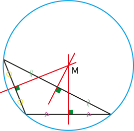

|
Chapitre 9
|
|
Partie 4
|
- Médiatrices dans le triangle
|
Rappel :
La
médiatrice d'un segment est la droite perpendiculaire à ce segment et qui le coupe en son milieu.
Propriétés
- Si un point est situé sur la médiatrice d'un segment, alors ce point est équidistant des extrémités de ce segment.
- Si un point est équidistant des extrémités d'un segment, alors ce point appartient à la médiatrice de ce segment.
Exemple :
Dans le triangle :
Propriété :
Les médiatrices d'un triangle sont concourante (elles se croisent en un même point).
Exemples :
Remarques :
- Ce point est à égale distance des sommets du triangle.
-
C'est le centre du cercle circonscrit au triangle :


Démonstration :
Soit ABC un triangle. Soit M le point d'intersection des médiatrices de [AB] et de [BC].
On a donc AM = BM et BM = CM, donc AM = CM.
Donc M appartient à la médiatrice de [AC] et donc les trois médiatrices du triangle sont concourantes.